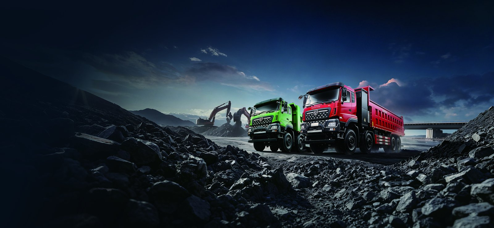

Medina (Madinah) hosts millions of pilgrims every Hajj and Umrah season, and the city’s logistics system must feed, clean and supply the holy sites without disturbing prayer, rest or the narrow streets around the Haram. That is a perfect brief for a quiet, zero-emission electric truck. This article looks at how the Dongfeng KT5M electric box truck fits Medina’s pilgrim-logistics duty — night catering delivery, waste collection and general supply distribution — and how it performs against diesel under Saudi operating conditions.
During peak Hajj, Madinah al-Munawwarah receives upwards of six million visitors across a compressed window, on top of year-round Umrah traffic. Hotels, catering kitchens, hospitals and the Haram precinct itself require a constant flow of food, water, linens, medical goods and waste removal. Most of that movement is restricted to night and off-peak windows to keep the streets clear and quiet during worship. A diesel box truck working those windows brings engine noise, exhaust and idling fumes into residential quarters at 2 a.m. — exactly the wrong time and place. An electric truck in Saudi urban service runs at a fraction of the noise with no tailpipe, which is why several municipal and hotel-supply fleets are trialling EVs for the Haram ring.
The KT5M is a medium-duty electric box truck with a 180-220 kWh CATL LFP battery, delivering 220-260 km of real-world range on a mixed urban cycle. For Medina duty that is comfortably more than a full night of short, stop-start delivery loops between depot, hotel districts and the Haram perimeter. The LvKong permanent-magnet motor produces 180-240 kW with full low-end torque, ideal for the frequent starts, loaded kerb pulls and ramped hotel service bays that define pilgrim-logistics driving.
The sealed LFP pack is tolerant of the 45 °C summer heat that Medina endures, with active liquid thermal management holding cell temperature in the safe band and protecting both range and the 8-year / 4,500-cycle warranty to 70% SOH. DC charging from 20-80% takes 35-50 minutes, so a truck that finishes its route at dawn can be ready again by the next evening shift.
The cab itself is part of the pilgrim-logistics case. The KT5M’s low floor and wide doors speed loader turnaround at hotel bays, and the near-silent electric drivetrain lets the driver work the pre-dawn window without the exhaust and clatter that disturb residents at prayer time. For operators running multiple units, the shared telematics layer reports state-of-charge, door events and kilometres per drop, which the Mayoralty-adjacent authorities and hotel groups increasingly ask suppliers to evidence. A fleet of KT5M trucks therefore reads as a managed, accountable service rather than a loose set of diesel vans, and that distinction is what wins the Haram-ring delivery permits.
| Parameter | KT5M Electric Box Truck |
|---|---|
| Battery | 180-220 kWh CATL LFP |
| Motor | LvKong 180-240 kW / 2,400 Nm |
| Real-world range | 220-260 km urban cycle |
| Box volume | Up to 32 m³ insulated option |
| DC charge 20-80% | 35-50 min at 180 kW |
| Noise at 30 km/h | Under 65 dB, near-silent at idle |
| Warranty | 8 yr / 4,500 cycles to 70% SOH |
| FOB price band | US$58,000-72,000 |
Saudi diesel runs about US$0.20-0.32 per litre after reforms; commercial electricity for a depot with off-peak charging is roughly US$0.08-0.13 per kWh. A diesel 7-9 t box truck burns 0.28-0.36 L/km in urban stop-start work; at US$0.28/L that is US$0.08-0.10 per km. The KT5M draws 0.8-1.1 kWh/km; at US$0.10/kWh that is US$0.08-0.11 per km — essentially even on energy. Maintenance is where the electric truck wins: no engine oil, no DPF, no clutch or gearbox wear, and regen cutting brake replacements. On 120 km per night, 330 nights a year, the combined saving is US$6,000-9,000 per truck, recovering the purchase premium in roughly 30-48 months while delivering the quiet, clean operation the Haram district requires.
The KT5M’s natural rhythm is charge during the day when the truck is idle and the grid is cooler, then run the night window empty. A 120 kW depot charger restores a full cycle in about 90 minutes, well inside the daylight gap. Fleets can also use the 20-80% fast-charge for a top-up between an early and late shift. Because the truck produces no exhaust, it can stage inside covered loading bays beside the Haram without ventilation concerns that a diesel unit would trigger.
For pilgrim-season peaks the maths is straightforward: Ramadan and Hajj adjacent periods lift delivery volume sharply, and a diesel fleet simply adds idling and smoke exactly when the streets are most sensitive. An electric truck fleet scales the same way — more units, same quiet profile — and the depot charger bank is sized once for the peak rather than the average. Operators who pilot two or three KT5M units through one Umrah season typically expand the following year, once the noise, emission and maintenance differences are visible to hotel clients and to the municipalities granting access.
Shaanxi Fenghan Trading exports the KT5M worldwide with left-hand-drive, GCC climate package, insulated box options and telematics for route proof. The Saudi Arabia market page details SABER certification and Dammam/Jeddah logistics. For Medina pilgrim-logistics operators we model shift plans against real Haram-zone rules and deliver a quiet, compliant electric truck fleet sized to your night window.
The path from pilot to fleet is the part we manage most carefully. A Medina operator rarely buys twenty KT5M units on day one; they trial two or three through a single Umrah season, prove the night-window range and the quiet access permits, then scale. We support that curve with spare-pack availability, driver training in electric operation and a telematics dashboard the hotel groups can read directly. Because the truck already meets the zero-emission brief the Haram district favours, the scaling decision is financial rather than regulatory — and the TCO above is what closes it. Send us your hotel list and drop count and we will size the pilot.
Operational detail decides whether the pilot succeeds. A Medina night route is not uniform: hotel clusters near the Haram run short, dense loops with tight turning and pedestrian conflict, while the airport and wholesale-resupply legs are longer and faster. We map both on the KT5M’s telematics before delivery, setting geofenced speed and recharge windows so drivers never strand a pack mid-shift. The insulated box option matters for catering loads that must hold temperature from the central kitchen to the hotel banquet, and the low floor speeds loader work at cramped service bays. For waste, the same chassis runs a quiet pre-dawn collection that the municipality tolerates inside the core where a diesel unit would draw complaints. Because one KT5M platform serves catering, supply and waste, the operator builds a single charging and maintenance routine rather than three, and that simplicity is what lets a small Medina fleet run clean through the whole pilgrim season without outside support.
Ready to electrify your fleet? Contact Shaanxi Fenghan Trading — authorized Dongfeng EV truck exporter. WhatsApp: +86 153 1943 1311 | Email: sales@fenghan-trade.com | dongfengevtrucks.com
🌐 Our Network: Fenghan Trade (SAGMOTO/SHACMAN Truck Export) · SAGMOTO cargo truck flatbed box stake